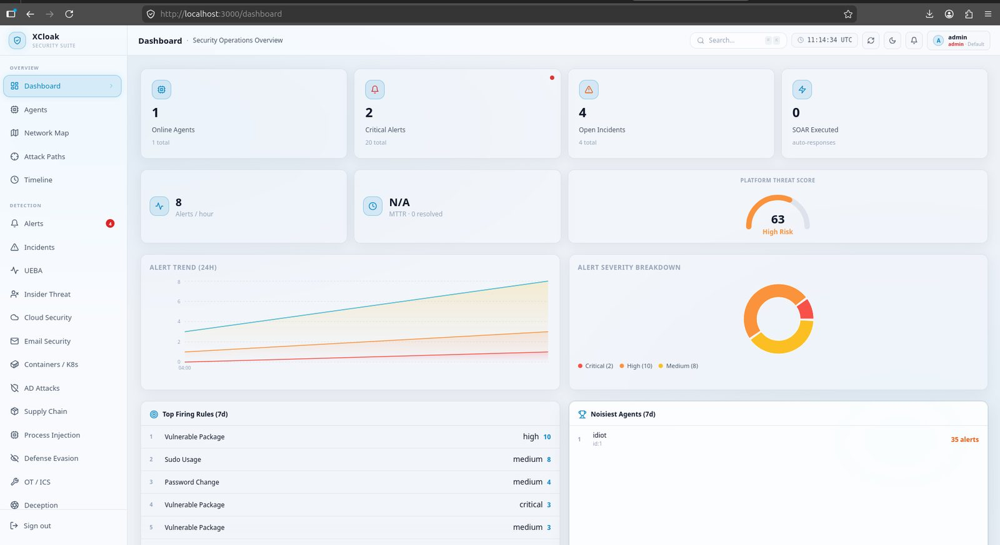
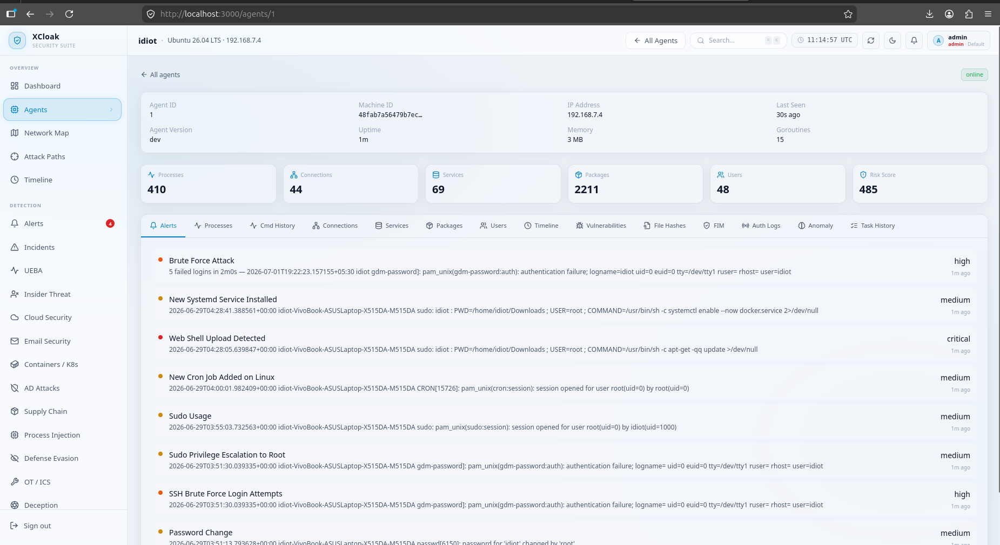
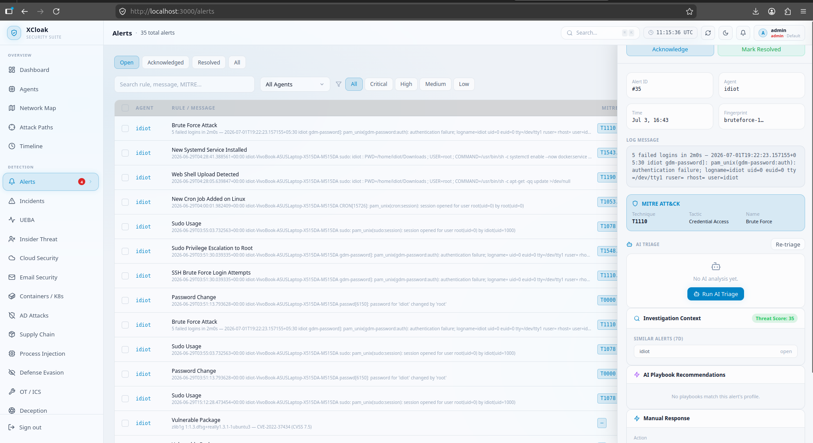
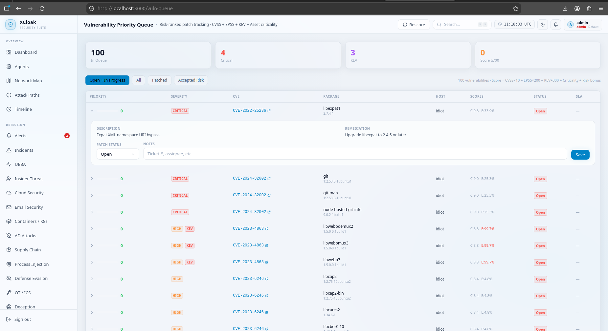
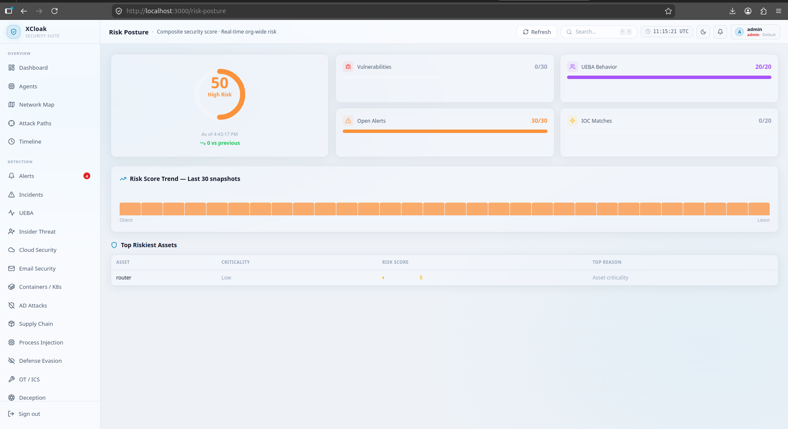
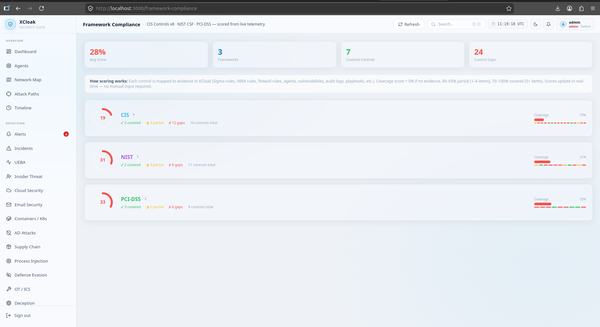
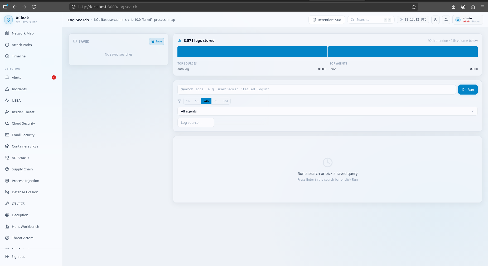
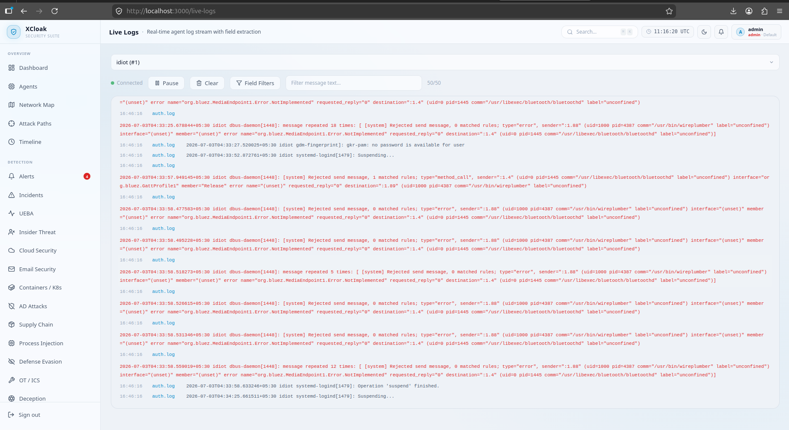

Stop managing six
security products.
XCloak unifies detection, investigation, response, and visibility into one platform — one agent, one dashboard, one vendor to call.

Real product screenshot — local development instance
Built on
What is XCloak?
XCloak is a security platform that combines network protection, log monitoring, endpoint defense, and automated response — all in one system.
One agent collects the data. One backend makes sense of it. One dashboard shows it to you — and it all runs on your own infrastructure.

Security got complicated.
A modern security team typically runs a separate tool for each job below — each with its own dashboard, its own agent, and its own bill.
Too many dashboards
Too many agents
Too many vendors
Too much complexity
XCloak reduces that complexity with one integrated platform — what the industry calls NGFW + SIEM + EDR + SOAR + ITDR + MDM, built and run as a single system instead of six.
Six jobs, one platform.
Grouped by what an analyst actually does, not by feature count.
Detect
- 43 production-ready Sigma rules
- 17 behavioral detection engines incl. DPI (MITRE ATT&CK mapped)
- YARA malware scanning + JA3/TLS fingerprinting
- IOC matching via Kafka async pipeline
Respond
- AI-recommended playbooks (Claude or Ollama)
- Isolate a host or kill a process remotely
- Script runner with real-time output
- Deception tech — honeypots, canary tokens, decoy files
- Human approval gate before destructive actions
Investigate
- Search across all your logs
- Case management and timelines
- AI-assisted alert triage
Manage Risk
- One risk score for your whole org
- Compliance tracking, always up to date
- Vulnerabilities ranked by real priority
Identity
- Catch stolen or misused logins
- Impossible-travel and brute-force alerts
- Enrich alerts with Active Directory context
Govern & MDM
- Separate spaces for every team or client
- Fine-grained roles and permissions
- Single sign-on and two-factor login
- Android MDM — 24 posture fields, 10 remote commands
- No Google EMM or per-device licensing
From attack to resolution.
Here's what happens, automatically, the moment something goes wrong.
Attack starts
Agent detects
Detection engine checks it
Matched against threat intel
Related events correlated
Incident opened
Automated response fires
Reported & closed
Every step happens without you opening a second tool.
Six layers, expanded.
Click any layer to see how it's actually built.
High Level
The four moving parts
High Level
The four moving parts
Frontend
Next.js dashboard
Backend
Go API + database
Agent
Linux & Windows
Observability
Metrics & dashboards
The agent talks only to the backend. The dashboard talks only to the backend. Nothing talks directly to the database except the backend.
Backend
How a request flows through the API
Backend
How a request flows through the API
No ORM — every database query is written and reviewed by hand.
Detection
What turns a log line into an alert
Detection
What turns a log line into an alert
Rule engine
43 detection rules, checked against every log
Behavioral detectors
29 engines watching for attack patterns over time
Malware scanning
Signature matching on the endpoint itself
Threat intel feeds
Known-bad IPs, domains, and file hashes
All four run in parallel — a single log can trigger more than one.
Infrastructure
What keeps it running and observable
Infrastructure
What keeps it running and observable
Kafka
Carries alerts and events between services
Redis
Sessions, rate limits, live updates
Prometheus + Grafana
Metrics and health dashboards
Docker / Kubernetes
Runs anywhere containers run
Database
Where everything is stored, safely
Database
Where everything is stored, safely
PostgreSQL, with every table checked against the current tenant on every query, plus database-level isolation rules as an extra safeguard still being rolled out.
Agent
What runs on the endpoint
Agent
What runs on the endpoint
A single binary — no separate runtime to install. Works on Linux and Windows.
The full stack.
Nothing hidden — here's exactly what runs under the hood.
| Frontend | Next.js, TypeScript, Tailwind CSS |
| Backend | Go 1.25, Gin |
| Database | PostgreSQL 16 (RLS tenant isolation) |
| Cache | Redis |
| Desktop Agent | Go — single binary, Linux & Windows (15 telemetry streams) |
| Mobile Agent | Flutter 3.24 — Android MDM client + SOC console |
| Messaging | Apache Kafka (async IOC matching + enrichment) |
| Search | Elasticsearch (full-text log search) |
| Storage | MinIO (WORM audit log export) |
| Secrets | HashiCorp Vault (secrets + TOTP) |
| Metrics | Prometheus + Grafana |
| AI | Ollama (local) or Claude |
| Login | JWT, 2FA, single sign-on |
| Identity | Active Directory / LDAP |
Three ways to run it.
Pick based on your setup — all three come from the same repository.
Docker Compose
One command. Best for trying it out.
Kubernetes / Helm
For production, with auto-scaling built in.
Bare binaries
No dependencies — run it directly on a VM.
# clone and start the stack
git clone https://github.com/The-Abhishek1/XCLOAK-SECURITY-SUITE.git
cd XCLOAK-SECURITY-SUITE && docker compose up -d
# start the backend
cd xcloak-platform/backend
cp .env.example .env && go run ./main.go
# → open http://localhost:3000 · first signup creates admin
# → 43 Sigma rules seeded automatically · first agent enrolled in < 1 minDetection you can read.
17 behavioral detection engines (incl. DGA domain scoring, TLS anomaly detection, HTTP inspection, and protocol anomaly detection) + 43 Sigma rules, all mapped to MITRE ATT&CK — not a black box.


| Detector | Catches |
|---|---|
| C2 Beacon Detector | Periodic outbound connections with suspicious timing regularity |
| DNS Security | DGA/entropy analysis, DNS tunneling, query floods |
| Port Scan / Lateral Movement | Vertical, horizontal, SYN sweeps; SMB spray |
| Data Exfiltration | Volume floods, cloud storage drain (S3/Drive/OneDrive/Dropbox) |
| TLS/JA3 Fingerprinting | 13+ C2 tool fingerprints — Cobalt Strike, Sliver, Havoc, BruteRatel, Emotet |
| Credential Attacks | SSH/RDP brute force, password spray, credential stuffing |
| Privilege Escalation | Windows Event IDs 4728/4732/4720/4672; Linux sudo/SUID chains |
| Ransomware Behavior | FIM mass-modification + crypto extensions; vssadmin/bcdedit kill-chain |
| Living-off-the-Land | Office→PowerShell chains; certutil, mshta, bitsadmin, regsvr32 abuse |
| Impossible Travel | Login from 900+ km/h distance (haversine + GeoIP) |
| UEBA | Per-user behavioral baseline; anomaly scoring |
| Network Behavior Analytics | Baseline deviation, anomalous connection patterns |
A quick look around.
Risk scoring, compliance, and log search — all in the same dashboard.




Where XCloak fits.
Based on each vendor's public documentation.
| Feature | XCloak | Wazuh | Elastic Security | Splunk (free) |
|---|---|---|---|---|
| SIEM | ✓ | ✓ | ✓ | ✓ |
| EDR agent (single binary) | ✓ Go | ✗ Java | ✗ JVM | — |
| SOAR / Playbooks | ✓ | ~ basic | ✓ | ~ limited |
| MDM (Android) | ✓ | ✗ | ✗ | ✗ |
| AI triage (LLM) | ✓ Ollama / Claude | ✗ | ~ | ✗ |
| Multi-tenancy | ✓ PostgreSQL RLS | ~ | ✓ | ✓ |
| Deception technology | ✓ | ✗ | ✗ | ✗ |
| No Java required | ✓ Go-only | ✗ | ✗ | ✗ |
| License cost (core) | Free (BSL 1.1) | Free (GPL) | Free tier | Free tier |
| Kubernetes / Helm | ✓ | ✓ | ✓ | ✓ |
| Self-hostable in 5 min | ✓ Docker Compose | ~ complex | ~ | ✗ |
✓ included · ~ partial or add-on · ✗ not offered · Based on each vendor's public documentation.
Find what you need.
Full documentation lives at docs.xcloak.tech — searchable, always current.
Installation
Get set up in minutes
Architecture
How it's built
Detection Engine
Sigma, YARA, JA3, threat intel
Deployment
Docker, Kubernetes, TLS, backups
Configuration
Every setting explained
Agent
Install on any endpoint
Using the Dashboard
Alerts, incidents, playbooks
API Reference
All 62 endpoints, generated
Development
Run it locally, contribute
Blog & Changelog
Technical writeups + live commit feed
Common questions.
Is XCloak really free?
Yes — free for self-hosted use up to 10 agents.
Do I need Kubernetes?
No. One docker compose up command runs everything.
How is this different from Wazuh?
XCloak adds real multi-tenancy, built-in automated response, and device management — in one system instead of several.
Where does my data go?
Nowhere but your own servers. There's no external telemetry endpoint.
Our mission
Good security shouldn't need a huge budget or a dozen disconnected tools. XCloak gives any team one platform that speaks one language, instead of six vendors that don't.
Built by 0xIdiot — open-core, self-hosted, and free to inspect.
Business Source License 1.1
Free for self-hosted use up to 10 agents. A commercial license is needed for production SaaS or larger deployments. Converts to Apache 2.0 on 2029-01-01.
Request a commercial licenseWhat's next.
Planned for v0.3.0 — Q3 2026.
Pre-built binaries
Linux amd64/arm64, Windows, and Android APK published on GitHub Releases.
Helm chart on GHCR OCI
One-line Helm install from GHCR OCI registry — no custom repo needed.
GitHub Actions CI/CD
Automated build, Docker push, and release pipeline on every merge.
macOS agent
Extend endpoint coverage to macOS — same single-binary, no runtime.